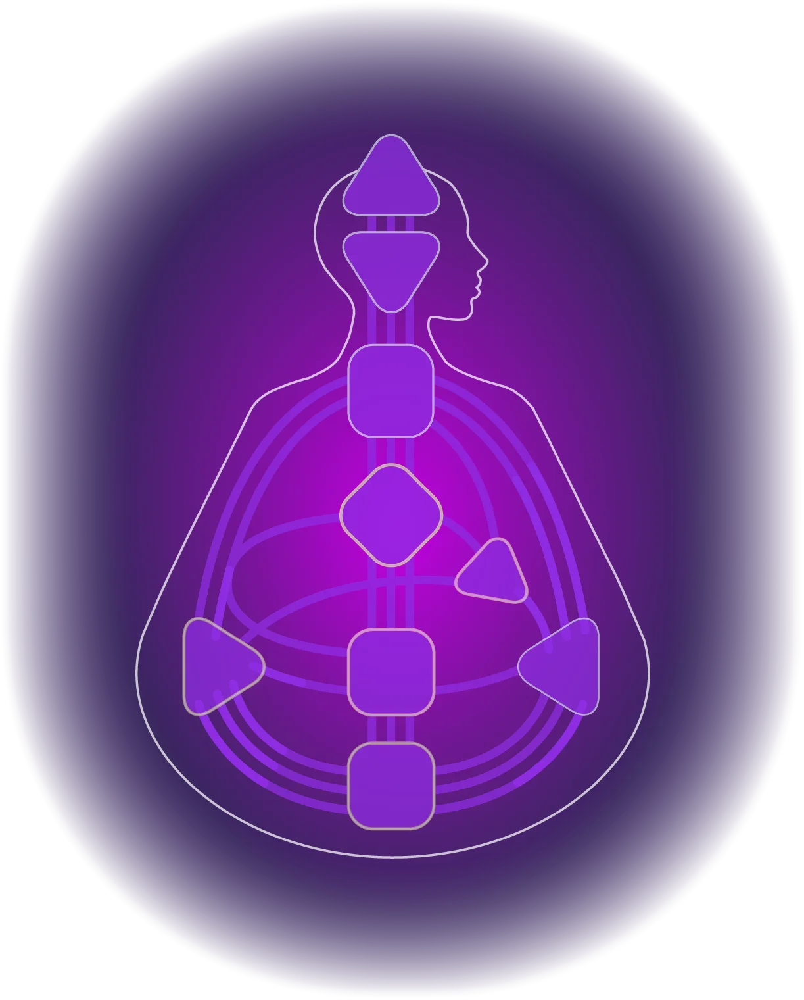

Learn Hub · Centra
De negen Centra zijn de architectuur van de Bodygraph. Elk Centrum regelt een specifieke biologische functie en psychologisch thema, en samen vormen ze uw Type, uw Definitie, en de manier waarop u het leven verwerkt.

In Human Design bevat de Bodygraph negen Centra, elk corresponderend met specifieke biologische functies en psychologische thema's. Deze Centra zijn afgeleid van het chakrasysteem, maar aangepast om de mutatie te weerspiegelen die de mensheid van het zeven-gecentreerde wezen naar het negen-gecentreerde wezen verschoof in 1781.
Elk Centrum is ofwel gedefinieerd (ingekleurd) of niet-gedefinieerd (wit) in uw Bodygraph. Een wit Centrum kan ongedefinieerd of volledig open zijn. Een gedefinieerd Centrum heeft consistente, betrouwbare energie; het functioneert op dezelfde manier ongeacht wie er om u heen zijn. Een ongedefinieerd of open Centrum neemt de energie van anderen op en versterkt deze, waardoor het een plaats van conditionering, gevoeligheid en potentiële wijsheid wordt.
Het patroon van definitie in uw chart bepaalt uw Type. Of het Sacraal gedefinieerd is, of een motor verbonden is met de Keel, en of er überhaupt definitie is - dit zijn de mechanismen achter de vijf Types. De Centra begrijpen betekent de architectuur van uw energie begrijpen.
Gedefinieerde Centra zijn waar uw energie vast, consistent en betrouwbaar is. Ongedefinieerde en open Centra zijn waar u conditionering opneemt en wijsheid ontwikkelt door ervaring. Het zijn geen zwaktes, maar gebieden van gevoeligheid. De sleutel is leren onderscheid te maken tussen wat van u is en wat u versterkt vanuit de wereld om u heen.
Het Hoofdcentrum is een van de twee drukcentra in de Bodygraph. Het creëert mentale druk in de vorm van inspiratie, vragen en de drang om te denken. Wanneer gedefinieerd, biedt het een consistente en betrouwbare manier van geïnspireerd zijn. Wanneer ongedefinieerd, neemt het de mentale druk van anderen op en versterkt deze, wat overweldigend kan aanvoelen. Het Niet-Zelf van het ongedefinieerde Hoofd probeert vragen te beantwoorden en druk op te lossen die nooit van hen waren.
Het Ajnacentrum is het centrum van conceptualisatie en mentale verwerking. Het neemt de druk en vragen van het Hoofd en zet deze om in concepten, meningen en overtuigingen. Wanneer gedefinieerd, biedt het een vaste en consistente manier van denken. Wanneer ongedefinieerd, kan het meerdere perspectieven zien en zich aanpassen aan verschillende manieren van informatieverwerking, maar het Niet-Zelf zoekt zekerheid en vormt vaste meningen om zich mentaal veilig te voelen.
Het Keelcentrum is het knooppunt van communicatie, expressie en manifestatie, en het meest complexe Centrum in de Bodygraph, met elf poorten. Alles in de chart zoekt uiteindelijk expressie door de Keel, omdat dit de plaats is waar energie taal en actie wordt. Wanneer gedefinieerd, biedt het een consistente stem en uitdrukkingswijze. Wanneer ongedefinieerd, verschuift expressie afhankelijk van met wie u bent. Het Niet-Zelf van de ongedefinieerde Keel spreekt om aandacht te trekken in plaats van te wachten op erkenning.
Het G-centrum is het centrum van identiteit, richting en liefde. Ook wel het Zelfcentrum genoemd, het herbergt de Magnetische Monopool, die het design kristal en persoonlijkheidskristal bij elkaar houdt en u door de ruimte oriënteert. Wanneer gedefinieerd, geeft het een vast en betrouwbaar gevoel van identiteit en richting. Wanneer ongedefinieerd, worden identiteit en richting vloeiend en gevormd door omgeving en relaties. Het Niet-Zelf van het ongedefinieerde G zoekt naar liefde, richting en een vaste identiteit in plaats van de wijsheid in zijn openheid te erkennen.
Het Hartcentrum, ook wel het Wilscentrum of Ego Centrum genoemd, is een motor verbonden met wilskracht, het materiële vlak en eigenwaarde. Het is het kleinste Centrum in de Bodygraph en werkt in pulsen, niet als een constante kracht. Wanneer gedefinieerd, biedt het consistente toegang tot wilskracht en het vermogen om verplichtingen aan te gaan en na te komen. Wanneer ongedefinieerd, is wilskracht inconsistent en gemakkelijk versterkt door anderen. Het Niet-Zelf van het ongedefinieerde Hart probeert zijn waarde te bewijzen, verbindt zich te veel en doet beloften die het niet kan volhouden.
Het Sacraalcentrum is de krachtigste motor in de Bodygraph, het centrum van levenskracht, seksualiteit, vruchtbaarheid en arbeidskracht energie. Het is het definiërende Centrum voor Generators en Manifesterende Generators, die ongeveer 70% van de bevolking vormen. Wanneer gedefinieerd, biedt het duurzame levenskracht energie die wordt vernieuwd door slaap. Het Sacraal reageert in het moment door buikgevoel, het onmiskenbare "uh-huh" en "uhn-uh" dat juiste betrokkenheid signaleert. Wanneer ongedefinieerd, is er geen consistente toegang tot sacrale energie, en de les is te herkennen wanneer genoeg genoeg is. Het Niet-Zelf van het ongedefinieerde Sacraal blijft doorgaan voorbij zijn grenzen omdat het energie versterkt die niet van hen is.
Het Emotioneel centrum is zowel een motor als een bewustzijnscentrum, het centrum van emotie, gevoel, verlangen en geest. Het werkt als een emotionele golf, bewegend door hoogte- en dieptepunten door de tijd. Wanneer gedefinieerd, bestaat helderheid niet in het nu. Het komt door de tijd, door de golf. Een gedefinieerd Emotioneel centrum geeft altijd Emotionele Autoriteit, wat betekent dat beslissingen nooit in het moment genomen moeten worden. Wanneer ongedefinieerd, neemt dit Centrum het emotionele veld van anderen op en versterkt het, vaak verhoogde gevoeligheid voor emotionele atmosfeer creërend. Het Niet-Zelf van het ongedefinieerde Emotioneel centrum vermijdt waarheid en confrontatie om de vrede te bewaren.
Het Miltcentrum is het oudste bewustzijnscentrum, geworteld in intuïtie, overleving, gezondheid en welzijn. Het werkt in het nu als spontaan instinctief bewustzijn dat eenmaal spreekt en zich niet herhaalt. Het wordt geassocieerd met immuniteit, instinct en existentiële alertheid. Wanneer gedefinieerd, biedt het consistent intuïtief bewustzijn en een betrouwbaar gevoel van wat gezond en veilig is. Wanneer ongedefinieerd, is miltbewustzijn inconsistent, en er kan een neiging zijn om mensen, situaties en patronen lang na hun tijd vast te houden. Het Niet-Zelf van de ongedefinieerde Milt houdt vast uit angst.
Het Wortelcentrum is zowel een drukcentrum als een motor, genererend adrenaline, stress en de druk om te evolueren. Samen met het Hoofd creëert het de druk die energie door de Bodygraph beweegt. Wanneer gedefinieerd, biedt het een consistente innerlijke drijfkracht en een betrouwbare manier om stress te hanteren in uw eigen tempo. Wanneer ongedefinieerd, versterkt het de druk van anderen, vaak een urgente behoefte creërend om te haasten en stress te ontladen. Het Niet-Zelf van het ongedefinieerde Wortel probeert altijd druk zo snel mogelijk kwijt te raken.
| Centrum | Thema | Biologisch | % Gedefinieerd | Gedefinieerd Kernpunt | Ongedefinieerd Niet-Zelf |
|---|---|---|---|---|---|
| Hoofd | Inspiratie en vragen | Pijnappelklier | ~30% | Consistente inspiratie | Overweldigd door mentale druk |
| Ajna | Conceptualisatie en denken | Hypofyse | ~47% | Consistent mentaal kader | Zoekt zekerheid |
| Keel | Communicatie en manifestatie | Schildklier en bijschildklier | ~72% | Consistente expressie | Spreekt voor aandacht |
| G-centrum | Identiteit, richting en liefde | Lever en bloed | ~57% | Vaste identiteit en richting | Zoekt naar liefde en richting |
| Hart / Wil | Wilskracht en waarde | Hart, maag, galblaas en thymus | ~35% | Betrouwbare wilskracht | Bewijst waarde |
| Sacraal | Levenskracht en arbeidskracht | Eierstokken en testikels | ~70% | Duurzame sacrale energie | Weet niet wanneer genoeg genoeg is |
| Emotioneel centrum | Emotie en verlangen | Nieren, alvleesklier en zenuwstelsel | ~47% | Emotionele helderheid door de tijd | Vermijdt waarheid en confrontatie |
| Milt | Intuïtie, overleving en gezondheid | Milt, lymfatisch systeem en immuunfunctie | ~55% | Consistent instinct | Houdt vast uit angst |
| Wortel | Drijfkracht, stress en druk | Bijnierenklieren | ~60% | Consistente drijfkracht | Haast zich om druk te verlichten |
Elk centrum in uw Bodygraph bevindt zich in een van drie toestanden. Het begrijpen van deze toestanden is fundamenteel voor het weten waar uw energie betrouwbaar is en waar u onderhevig bent aan conditionering van de wereld om u heen.
Een gedefinieerd centrum is ingekleurd op uw Bodygraph. Het heeft tenminste één volledig kanaal dat het verbindt met een ander gedefinieerd centrum, waardoor een consistente en betrouwbare energiestroom ontstaat. Gedefinieerde centra zijn vast in hun werking. Ze werken op dezelfde manier, ongeacht wie er om u heen is. U straalt deze energie naar buiten uit en conditioneert anderen ermee. Dit zijn de gebieden waar u het meest consistent en zelfvertrouwend bent.
Een ongedefinieerd centrum verschijnt wit op uw Bodygraph maar bevat een of meer poortactiveringen. U heeft geen consistente toegang tot de energie van dit centrum, maar de geactiveerde poorten creëren gedeeltelijke, hangende verbindingen die energie van anderen aantrekken. Ongedefinieerde centra zijn waar u de energie van gedefinieerde centra om u heen opneemt, versterkt en weerkaatst. Na verloop van tijd worden ze bronnen van wijsheid door geleefde ervaring.
Een volledig open centrum is ook wit op uw Bodygraph maar heeft helemaal geen poortactiveringen. Dit is het diepste punt van conditionering en ook het diepste potentieel voor wijsheid. Zonder poorten om de binnenkomende energie te filteren of te focussen, neemt een open centrum het volledige spectrum van het thema van dat centrum op. Open centra kunnen diepgaande bronnen van wijsheid worden, juist omdat er geen vaste manier is om te verwerken wat er doorheen beweegt.
In de praktijk worden "ongedefinieerd" en "open" vaak door elkaar gebruikt. Het belangrijkere onderscheid is tussen gedefinieerd en niet-gedefinieerd. Als een centrum wit is in uw chart, neemt u daar energie op en versterkt u deze, of het nu technisch gezien ongedefinieerd is met activeringen of volledig open zonder activeringen. Het potentieel voor wijsheid blijft. Wat verschilt is de diepte en reikwijdte van conditionering.
Celebrity database
Zoek op naam en ontdek gratis Human Design charts berekend over 7 systemen. Filter op Type, Profiel, Autoriteit, zonneteken, maanteken en meer.
Zoek celebrities →Leer hoe centrumdefinitie uw Type vormt, van Generator en Projector tot Manifestor, Manifesterende Generator en Reflector.
Ontdek het kostuum dat u draagt, uw rol, persoonlijkheid en levensthema.
Ontdek de diepere cognitieve laag van uw design, inclusief hoe u verteert, denkt, waarneemt en de wereld opneemt.
Genereer uw gratis chart en zie welke van uw negen centra gedefinieerd, ongedefinieerd en open zijn, samen met uw Type, Autoriteit en de volledige architectuur van uw design.
Get Pro →